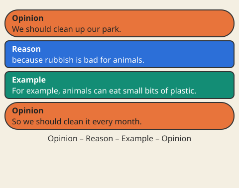

Umwelt: Müll, Recycling und ein Vorschlag
Mit einem KI-Tutor lernen
Ein KI-Tutor erklärt dir diese Seite und hilft dir bei den Aufgaben. Wähl deinen Assistenten:
Mit Claude öffnen Mit ChatGPT öffnen Mit Mistral Vibe öffnen
Du nutzt dein eigenes Konto beim Anbieter. Der Assistent ist kein Angebot von lernapps.net: lernapps liefert nur Inhalte und Aufgaben. Die Wahl gilt für alle Seiten, nur auf diesem Gerät.
Wohin mit dem Müll?
 © CC-BY-4.0
© CC-BY-4.0Drei Mülleimer in der Schule.
In der Schule stehen drei Mülleimer.
Aufgabe
Lösung
Eine alte Zeitung
Zeitungen sind aus Papier.
Eine leere Saftflasche aus Plastik richtige Antwort
Plastik kommt zu Plastik.
Ein leeres Marmeladenglas
Gläser kommen zu Glass.
Jeder Mülleimer ist für ein Material.
Das kannst du danach: Du sprichst über Müll und Recycling und machst einen Vorschlag für deine Schule.
Ein Artikel der Schülerzeitung
| Englisch | Deutsch |
|---|---|
| waste | Abfall, Müll |
| rubbish bin | Mülleimer |
| packaging | Verpackung |
| environment | Umwelt |
| sustainable | nachhaltig |
| recycle | recyceln, wiederverwerten |
| reuse | wieder benutzen |
| reduce | verringern |
| energy | Energie |
| estimate | schätzen |
| per cent | Prozent |
| tonne | Tonne (1000 Kilo) |
| aluminium | Aluminium |
| break down | zerfallen |
| plastic | Plastik |
| nature | Natur |
| tap water | Leitungswasser |
| canteen | Kantine |
| water station | Trinkwasserstelle |
| fill | füllen |
| separate | getrennt |
Die Zahlen sind die Zeilen.
Plastic waste at our school
1 Look into the rubbish bin near the canteen. What do you see? Plastic bottles, paper and a lot of packaging.
2 Plastic is a big problem for the environment. It is cheap and strong, but it breaks down very slowly.
3 Experts estimate that people made about 8.3 billion tonnes of plastic by 2018. About 6.3 billion tonnes became waste. Only 9 per cent of it was recycled.
4 Recycling means that old things become new things. Making an aluminium can from an old one uses only about 5 per cent of the energy that a new one needs.
5 But recycling is only the last of three steps. First, we can reduce: we buy less. Then we can reuse: we use a bottle again. Last, we recycle: we put things in the right bin.
6 What can our school do? A sustainable school makes less waste. We should have a water station, so pupils can fill their own bottles. Moreover, we should have separate bins for paper and plastic.
7 Some pupils say this costs too much. However, a bottle that you use again is cheaper than a new bottle every day. Therefore, we think the school should try it.
8 What do you think? Write to us!
Vorschläge machen und Mengen sagen

© CC-BY-4.0Ein Burger, dessen Meinung ein Vorschlag mit should ist.
Merke
Mit should machst du einen Vorschlag. Danach steht das Verb ohne to: We should plant a tree. Must ist stärker. Es ist eine Pflicht: You must wear a helmet.
Zählbar oder nicht? Was du zählen kannst, sagst du mit many und fewer: many cans, fewer cans. Was du nicht zählen kannst, sagst du mit much und less: much water, less water.
Nature steht ohne the: Nature is important for all of us. Die Umgebung, in der wir leben, heißt the environment.
Verstehen, belegen, Vorschläge schreiben
Aufgabe
Lösung
Richtige Antwort: Die Aussage stimmt nicht.
Nur etwa 9 Prozent, das steht in Zeile 3.
Aufgabe
Lösung
Es ist zu teuer
In Zeile 2 steht, dass Plastik billig ist.
Man kann es nicht recyceln
Ein Teil wird recycelt, siehe Zeile 3.
Es zerfällt sehr langsam richtige Antwort
Das steht in Zeile 2.
Plastik bleibt lange in der Umwelt.
Aufgabe
Lösung
Zeile 2
Hier steht keine Menge.
Zeile 3 richtige Antwort
Hier stehen Tonnen und ein Prozentwert.
Zeile 4 richtige Antwort
Hier steht 5 per cent.
Zeile 5
Hier steht nur die Zahl der Schritte.
Mengen und Anteile belegen eine Aussage.
Aufgabe
Lösung
Richtige Antwort: I use a glass jar again for my pencils. – reuse; I put my old newspaper in the right bin. – recycle; I take fewer bags from the shop. – reduce
Weniger nehmen, wieder benutzen, aus Altem Neues machen.
Aufgabe
Wähle das richtige Wort.
- Wir sollten weniger Plastik benutzen. → We should use … plastic.
- Es gibt zu viele Flaschen. → There are too … bottles.
- Ich gehe gern in der Natur spazieren. → I like walking in ….
- Wir brauchen weniger Flaschen. → We need … bottles.
Lösung
- We should use less plastic.
- There are too many bottles.
- I like walking in nature.
- We need fewer bottles.
Many und fewer für Zählbares, much und less für Nicht-Zählbares.
Aufgabe
Schreibe auf Englisch. Satz 1: Wir sollten Wasser aus dem Hahn trinken. Satz 2: Plastik ist billig. Aber es ist schlecht für die Umwelt. Satz 3: Wir sollten unsere Taschen wieder benutzen. Die englischen Wörter sind nur eine Hilfe: Ergänze, was für einen ganzen Satz fehlt.
Tipp
Achte auf Punkt und Komma.
- we · should · drink · tap water
- plastic · cheap · however · bad · environment
- we · should · reuse · bags
Lösung
- We should drink tap water. (auch richtig: We should drink water from the tap.)
- Plastic is cheap. However, it is bad for the environment.
- We should reuse our bags. (auch richtig: We should reuse the bags.; We should reuse bags.)
Aufgabe
Hör zu und schreibe, was du hörst.
- KI
- KI
- KI
Lösung
- Every pupil should have a bottle for water.
- Plastic is useful, but it is bad for nature.
- Our town has a new recycling centre.
Dein Vorschlag
Aufgabe
Hör zu, sprich nach und nimm dich auf. Vergleiche dann mit dem Original.
Tipp
Hör zu. Sprich dann langsam nach.
- What can we do for the environment?KI
- I always bring my own bag to the supermarket.KI
- Let us plant some trees in the school garden.KI
Zum Aufnehmen braucht diese Aufgabe JavaScript. Die Beispiele kannst du auch ohne anhören.
Lösung
- What can we do for the environment?
- I always bring my own bag to the supermarket.
- Let us plant some trees in the school garden.
Offene Aufgabe
Mach einen Vorschlag zum Thema Müll, für deine Schule oder dein Zuhause. Schreibe einen Burger aus vier Sätzen. Der Vorschlag steht mit should in der ersten Schicht. Danach kommt ein fünfter Satz mit however oder moreover.
Tipp
Die App bewertet nicht. Prüfe deinen Text anhand der Punkte.
Eine gute Antwort enthält:
Lösung
We should use both sides of the paper. We need fewer new sheets, because we can write on the back of old ones. For example, my class wrote a short test on the back of an old worksheet last week. So we should always use both sides. Moreover, we can save a lot of money.
Wie es weitergeht
Der Artikel endet mit „Write to us!“. Darauf antwortest du erst am Ende des Kapitels. Als Nächstes sprichst du über Erfindungen.
Fehler gefunden oder eine Idee für diese App?